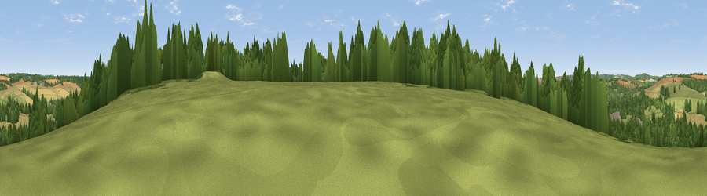

Viewpoint near Mildenhall
#42711 in England · top 92% of its area beats it · near MildenhallWhere it is
The exact computed spot (SU 20375 68575). Click the marker for map links.
The view, rendered

A 360° render of this exact spot computed from the terrain model, tree cover and land cover — summer colours, afternoon light, calibrated against photographs of famous viewpoints. Real trees, hedges and buildings will differ in detail.
The panorama
Grey silhouette: terrain skyline in each direction (720 bearings, Earth curvature and refraction included). Dashed green: skyline with trees (+15 m) and buildings (+8 m) as obstacles. Blue strip: how far the ground is visible on each bearing.
Where the view opens
Wedge length = distance to the farthest visible ground on that bearing (vegetation-aware). Rings at 10, 25 and 50 km.
What fills the view
32% woodland · 31% grassland · 27% cropland · 10% built-up
Angular shares of the visible panorama (visual magnitude), not map area. Landscape diversity 0.57 (0–1 Shannon).
Key numbers
More beautiful places nearby
The staircase of upgrades: each row has a higher view potential than everything closer. Driving times are estimates from straight-line distance, calibrated against real road routing — check an actual route before setting out.
| Place | Direction | Drive | Score |
|---|---|---|---|
| Viewpoint near Mildenhall | ENE · 1 km | ~3 min | 34.6 |
| Viewpoint near Mildenhall | NE · 4 km | ~10 min | 35.6 |
| Viewpoint near Mildenhall | NE · 5 km | ~11 min | 38.1 |
| Viewpoint near Ogbourne St George | N · 5 km | ~12 min | 45.9 |
| Martinsell viewpoint | SSW · 5 km | ~12 min | 76.9 |
| Viewpoint near Nympsfield | NW · 52 km | ~74 min | 77.5 |
| Painswick Beacon | NW · 55 km | ~77 min | 79.6 |
| Viewpoint near Stinchcombe | WNW · 55 km | ~77 min | 80.5 |
51.41583, -1.70840 · source: screening · position refined by local search. Computed location — check access rights before visiting.